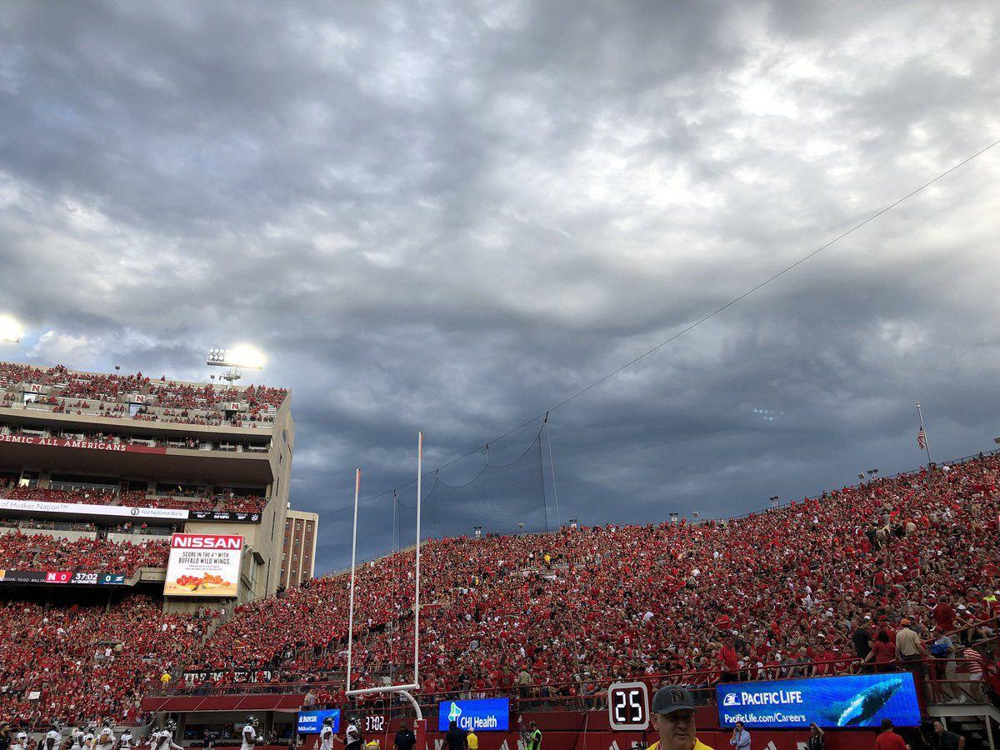

Final Project Proposal

Weather Sportscast
The Team
Sebastian Bigos
Last Updated Entry
Sprint 5
11-8-20
Description
The user will be able to select an NFL game from a schedule using a drop down menu perhaps, and will be shown current forecast predictions for that game.
Features to be Implemented
- Drop down menu to change the schedule by week
- Get data from a weather source using an api
- Display a visual depending on the forecast
Desired Features
- Add more sports and leagues
- Display specific info about weather
- Make it very aesthetically pleasing
Tools
HTML, CSS, JavaScript, Weather APIs
Technical Features From Class
Drop down menus, responding to click events using JavaScript
Technical Features Beyond Class
Utilizing a different API and responding with that